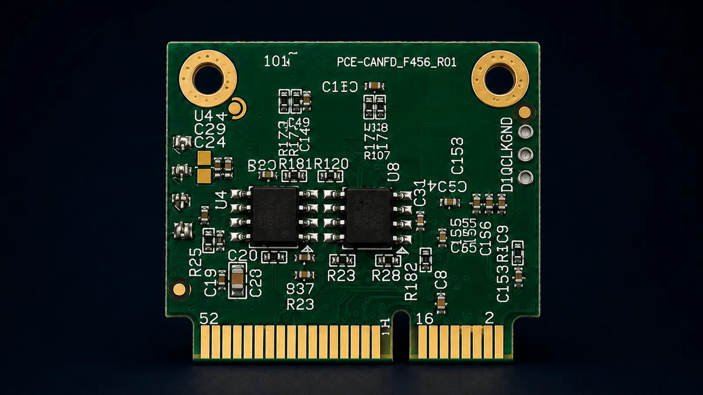
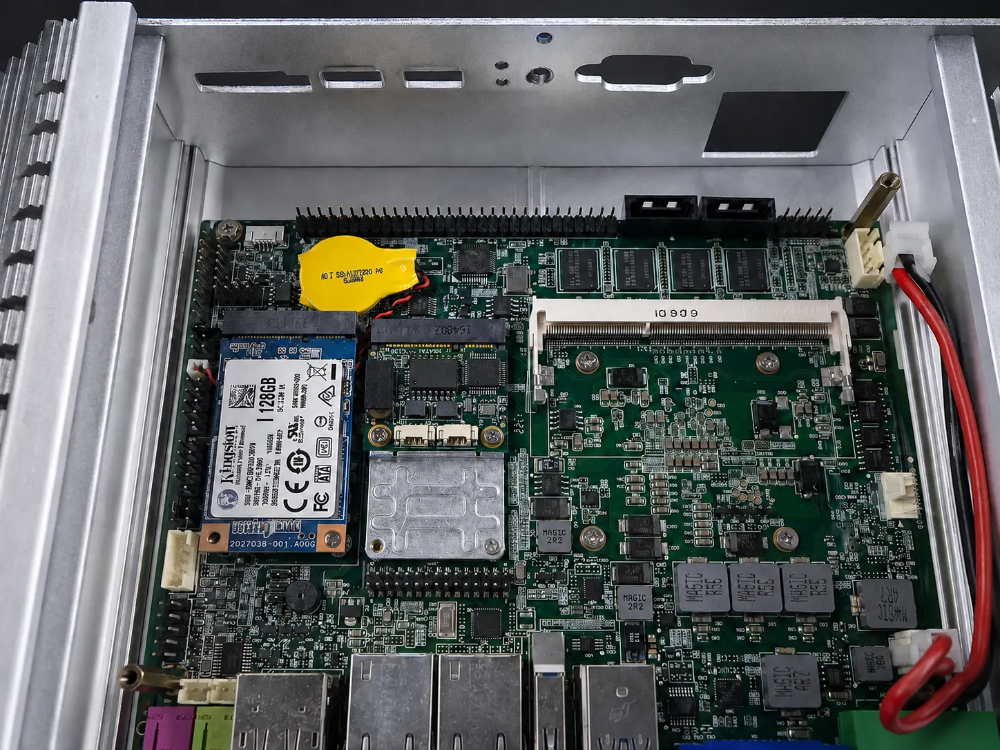
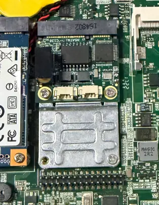

Independent channels
Keep two CAN networks separate.

ISOLATED CAN FD INTERFACE
Add two electrically isolated CAN/CAN FD channels to a Windows or Linux computer through a compatible Mini PCIe slot.
Full-height bracket + 2 DB9 breakout cables included

Hardware

Embedded CAN FD
Keep two CAN networks separate.
Data phase up to 8 Mbit/s.
No external USB adapter box.
Electrical isolation separates the host-side interface from the CAN bus signals.
Installation example
The module sits in a compatible Mini PCIe slot and adds two isolated CAN / CAN FD channels without an external adapter box.


Included accessories
Every DualCANFD module comes with a full-height expansion bracket and two DB9 breakout cables.

Windows recognition
With the Xilume Windows driver installed, each CAN FD channel appears as a separate named COM port in Device Manager. These are CAN FD transport endpoints for Xilume software and protocol, not general-purpose serial ports.
The Mini PCIe slot must provide USB 2.0 signals.
Documentation & software
We provide a user manual, SDK, drivers and a getting-started README with DualCANFD.
Dual Mini PCIe CAN FD